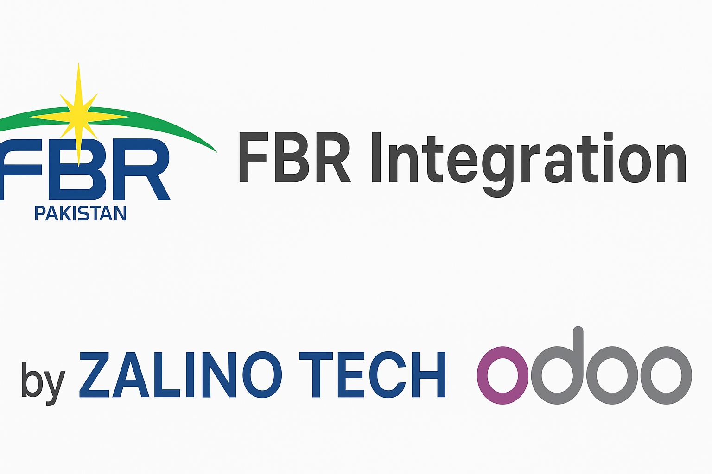
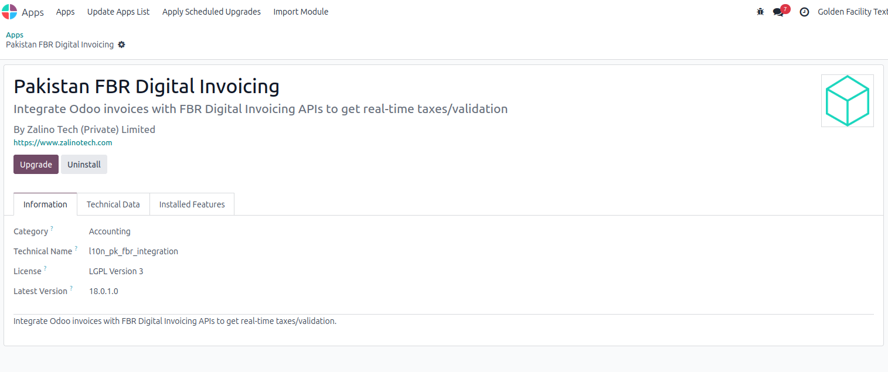
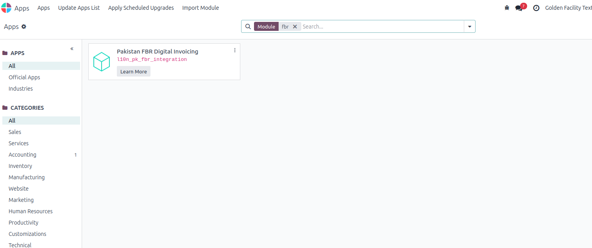
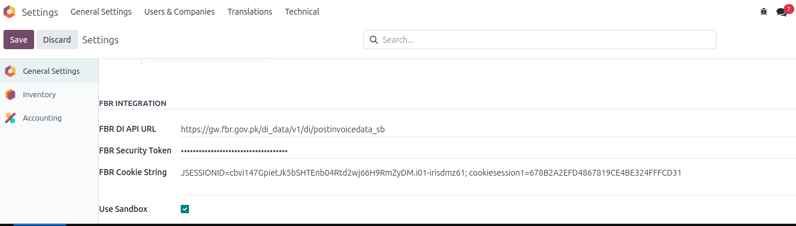
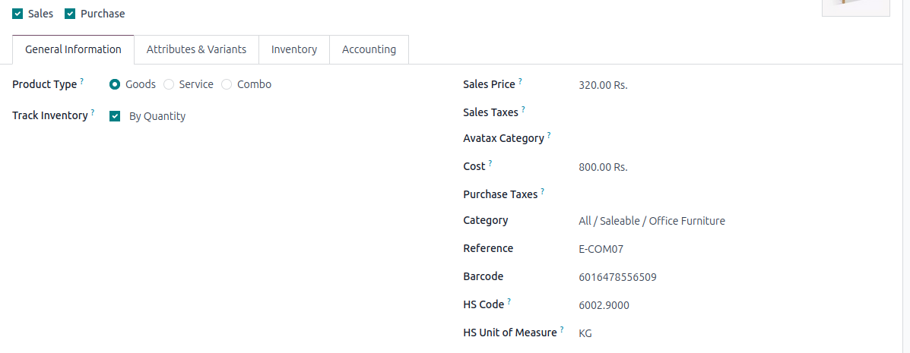
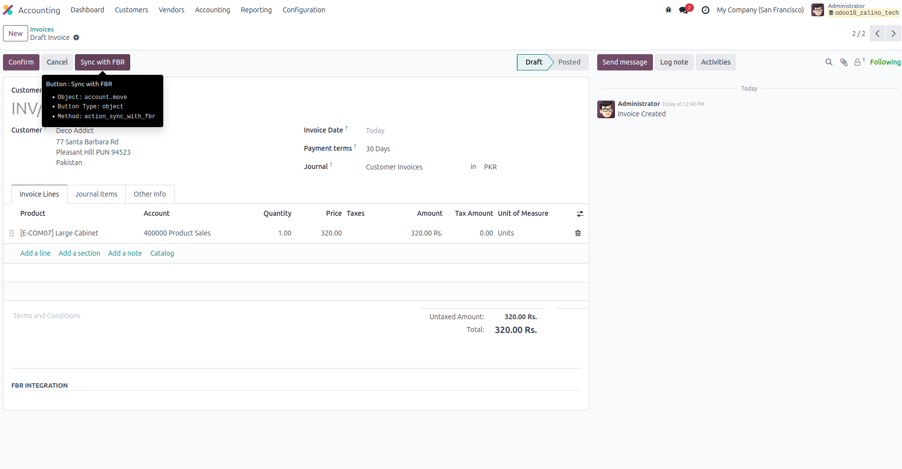
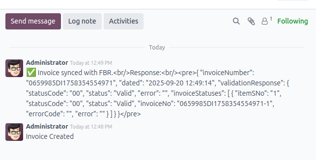

App Summary: The FBR Integration App by Zalino Tech seamlessly connects Odoo ERP with Pakistan’s Federal Board of Revenue (FBR) digital invoicing system. It ensures that all sales invoices are validated, synced, and compliant with FBR’s prescribed formats, HS Codes, and reporting requirements.
Invoices generated in Odoo are automatically submitted to FBR’s digital invoicing system. Below is a sample response:
{
"dated": "2025-09-19 12:32:32",
"validationResponse": {
"statusCode": "01",
"status": "Invalid",
"errorCode": "0052",
"error": "HS Code does not match with provided sale type.",
"invoiceStatuses": null
}
}
Errors are logged in Odoo for quick correction and resubmission.
When you search for 'fbr' in Apps, the l10n_pk_fbr_integration module will appear with the title Pakistan FBR Digital Invoicing.

After searching for 'fbr' in Apps, the l10n_pk_fbr_integration module will be available with the title Pakistan FBR Digital Invoicing. You can now install it.

After installation, go to Settings > General Settings. At the bottom of the page, you will see the FBR Integration fields. Please fill in the details as per your account information received from the FBR portal.

Addition of new fields in product HS Code, HS Unit of Measure. Update your products accordingly. For more details about HS codes, please visit the FBR portal.

When you create a new invoice, a new button Sync with FBR will appear. After creating the invoice, click the button and your data will be synced with FBR.

Every invoice submission and FBR response is logged in Odoo for full traceability and compliance audits.

The Zalino Tech FBR Integration App ensures your business remains fully compliant with Pakistan’s e-invoicing regulations. It simplifies invoice submission, validation, and error handling—making Odoo a powerful tool for automated FBR reporting.